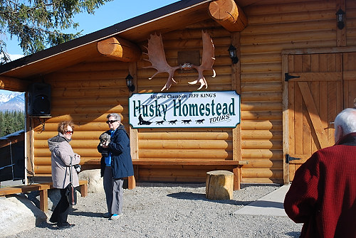

|

Early the next morning in Denali Park, we enjoyed a tour of a kennel that trained sled dogs. The name of the homestead is somewhat misleading. "Huskies" are a breed and not all sled dogs are huskies. This is the homestead and kennel for Jeff King. Jeff won the Iditarod four times (1993, 1996, 1998, 2006) as well as many others. |